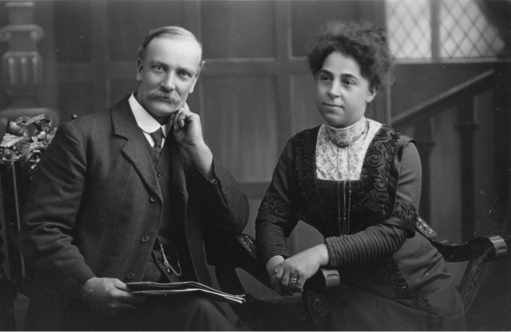
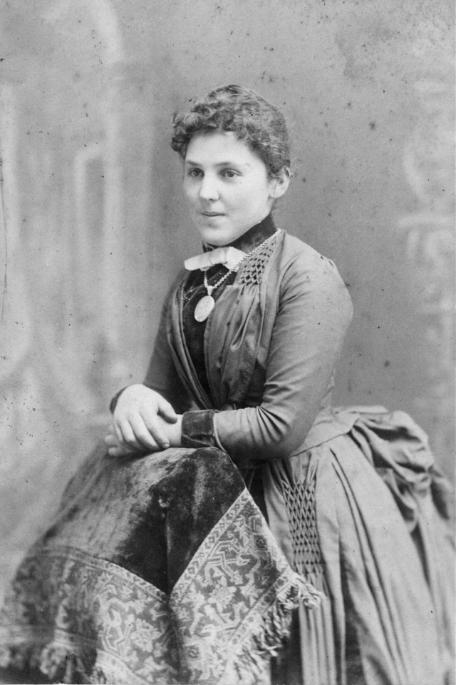
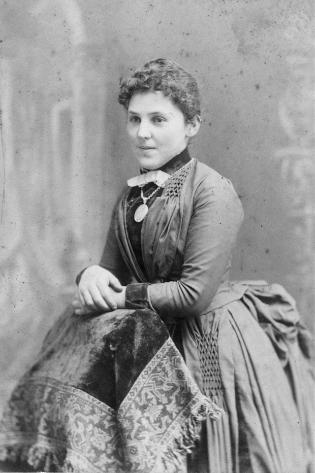

Pictured below is my grandmother Mary Ann Handley née Sowman aged about 21 years. The digital enlargement of her ring finger clearly shows the impression of a ring which she had removed prior to the photograph. What a pity she wasn't wearing it. This was probably her engagement ring which, even today, is still retained within the family.
The photograph below, taken in 1913, shows Aunt Alice and Uncle Will. Aunt Alice was sister to Mary Ann Sowman. She was born in 1867, hence was four years older than Mary. 
I can find no record of a marriage between Alice Sowman and William Watson (Uncle Will). This might be explained by Uncle Will's proclivities in which he probably viewed the institution of marriage as a capitulation to Church and State. (I have suggested elsewhere that Uncle Will was somewhere to the left of Lenin). Mary Ann and Alices's older brother was Thomas Sowman born about 1862. Their mother was Sarah Ann Sowman (née Lott) born between 1827 and 1829 in Brantham, Suffolk. Her photographs are shown below. Their father was Thomas Sowman born about 1827 in Polstead, Suffolk. (It appears that "Sowman" is not a common surname and that, today, most are living in Suffolk and north Essex). The marriage certificate for Mary Ann dated January 1894 shows the occupation of her father as "Boilermaker".
Sarah Ann Sowman was known as "Grandma Sowman" to Gangan's children Arthur, Dora and Daisy. The 1901 Census shows that Sarah Ann, then aged 72, was resident at an Alms House in West Ham. (I presume this was administered under the Victorian Poor Law). This Census also lists her daughter Alice Sowman who was then employed at the Alms House as a domestic servant. I understand that Sarah Ann died in 1921 at the age of about 92 years. I wonder whether she lived at the Alms House all those years between 1901 and 1921?
|
 
